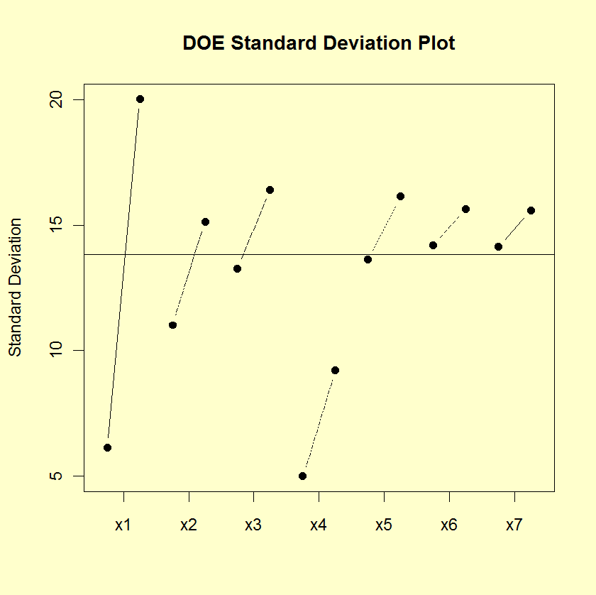

|
1.
Exploratory Data Analysis
1.3. EDA Techniques 1.3.3. Graphical Techniques: Alphabetic
|
|||
|
Purpose: Detect Important Factors With Respect to Scale |
The DOE standard deviation plot is appropriate for analyzing
data from a designed experiment, with respect to important
factors, where the factors are at two or more levels and there
are repeated values at each level. The plot
shows standard deviation values for the two or more levels of
each factor plotted by factor. The standard deviations for a
single factor are connected by a straight line. The DOE
standard deviation plot is a complement to the traditional
analysis of variance
of designed experiments.
This plot is typically generated for the standard deviation. However, it can also be generated for other scale statistics such as the range, the median absolute deviation, or the average absolute deviation. |
||
| Sample Plot |

This sample DOE standard deviation plot shows that:
|
||
|
Definition: Response Standard Deviations Versus Factor Variables |
DOE standard deviation plots are formed by:
|
||
| Questions |
The DOE standard deviation plot can be used to answer the
following questions:
|
||
|
Importance: Assess Variability |
The goal with many designed experiments is to determine which factors are significant. This is usually determined from the means of the factor levels (which can be conveniently shown with a DOE mean plot). A secondary goal is to assess the variability of the responses both within a factor and between factors. The DOE standard deviation plot is a convenient way to do this. | ||
| Related Techniques |
DOE scatter plot DOE mean plot Block plot Box plot Analysis of variance |
||
| Case Study | The DOE standard deviation plot is demonstrated in the ceramic strength data case study. | ||
| Software | DOE standard deviation plots are not available in most general purpose statistical software programs. It may be feasible to write macros for DOE standard deviation plots in some statistical software programs that do not support them directly. | ||